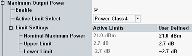

WCDMA equipment is divided into several power classes. For each power class 3GPP defines the maximum output power of the UE transmitter and an upper and lower tolerance value. Example: According to the test requirements, the maximum output power of a class 1 UE must be between 33 dBm - 3.7 dB and 33 dBm + 1.7 dB.
The nominal maximum power and tolerance values can be comfortably configured in the limits section by selecting the power class of the UE. The resulting settings are displayed in column "Active Limits". If you want to use different values, select "User Defined" for "Active Limit Select" and adjust the values in column "User Defined".
If the combined signal path scenario is active, an additional parameter "Use Reported", is displayed. If this parameter is enabled, the UE power class value reported by the UE in the capability report is used. The manually configured value is used if the parameter is disabled or no value has been reported.

The test requirements for the individual UE power classes are defined in 3GPP TS 34.121, section 5.2 Maximum Output Power and listed in the following table.
The measured power of all preambles must not exceed the "Nominal Maximum Power" + "Upper Limit".
The "Lower Limit" is relevant for power steps, see "Power Step Limits".